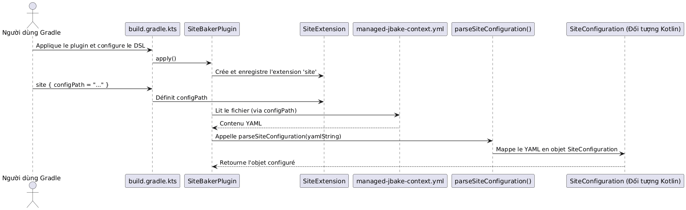

Điều 3: Tích hợp Jackson để phân tích cú pháp YAML với TDD trong một Gradle Plugin
Đăng ngày 25 September 2025
Đối tượng mục tiêu: Các nhà phát triển Gradle trình độ trung cấp muốn quản lý các cấu hình phức tạp.
Giới thiệu
Trong quá trình phát triển plugin Gradle, việc quản lý các cấu hình phức tạp là một tác vụ phổ biến. Thay vì làm quá tải DSL với hàng trăm thuộc tính, việc định nghĩa cấu hình trong một tệp bên ngoài, chẳng hạn như YAML, thường sạch sẽ và dễ bảo trì hơn. Bài viết này sẽ hướng dẫn bạn cách tích hợp thư viện Jackson mạnh mẽ để parse các tệp YAML thành các đối tượng Kotlin, đồng thời áp dụng phương pháp TDD nghiêm ngặt để đảm bảo tính ổn định cho plugin của chúng ta`site-baker`Vui lòng cung cấp văn bản cần dịch.
1. Ngữ cảnh: Plugin site-baker của chúng tôi
Plugin của chúng tôi`site-baker`được thiết kế để tự động hóa việc tạo và triển khai một trang web tĩnh. Nó cần đọc một tệp cấu hình YAML (managed-jbake-context.yml) để lấy các thông tin như đường dẫn nguồn, đích triển khai và định danh Git.
Cấu hình YAML mà chúng tôi muốn parse trông như thế này:
bake:
srcPath: "./site/jbake"
destDirPath: "bake"
cname: "cheroliv.com"
pushPage:
from: "bake"
to: "cvs"
repo:
name: "trainings"
repository: "https://github.com/pages-content/pages-content.github.io.git"
credentials:
username: "USERNAME"
password: "SECRET_TOKEN"
branch: "main"
message: "cheroliv.com"
# ... autres configurations (pushMaquette, supabase, etc.)2. Mô hình hóa Cấu hình trong Kotlin
Trước khi parse, chúng ta cần định nghĩa cấu trúc dữ liệu trong Kotlin. Jackson sẽ sử dụng các lớp này để tự động map nội dung YAML.
// plugin/src/main/kotlin/com/cheroliv/site/baker/data/SiteConfiguration.kt
package com.cheroliv.site.baker.data
import com.fasterxml.jackson.databind.ObjectMapper
import com.fasterxml.jackson.dataformat.yaml.YAMLFactory
import com.fasterxml.jackson.module.kotlin.readValue
import com.fasterxml.jackson.module.kotlin.registerKotlinModule
fun parseSiteConfiguration(yaml: String): SiteConfiguration {
val mapper = ObjectMapper(YAMLFactory()).registerKotlinModule()
return mapper.readValue(yaml)
}
data class GitPushConfiguration(
val from: String = "",
val to: String = "",
val repo: RepositoryConfiguration = RepositoryConfiguration(),
val branch: String = "",
val message: String = "",
)
data class RepositoryConfiguration(
val name: String = "",
val repository: String = "",
val credentials: RepositoryCredentials = RepositoryCredentials(),
) {
companion object {
const val ORIGIN = "origin"
const val CNAME = "CNAME"
const val REMOTE = "remote"
}
}
data class RepositoryCredentials(val username: String = "", val password: String = "")
data class SiteConfiguration(
val bake: BakeConfiguration = BakeConfiguration(),
val pushPage: GitPushConfiguration = GitPushConfiguration(),
val pushMaquette: GitPushConfiguration = GitPushConfiguration(),
val pushSource: GitPushConfiguration? = null,
val pushTemplate: GitPushConfiguration? = null,
val supabase: SupabaseContactFormConfig? = null
)
data class BakeConfiguration(
val srcPath: String = "",
val destDirPath: String = "",
val cname: String? = null,
)
// ... (autres data classes pour Supabase, si nécessaire)Hàm`parseSiteConfiguration`là điểm nhập cho quá trình giải tuần tự hóa. Nó sử dụng`ObjectMapper`của Jackson, được cấu hình với`YAMLFactory`cho định dạng YAML và`registerKotlinModule()`để hỗ trợ các đặc thù của Kotlin (như giá trị mặc định của thuộc tính).
3. Tích hợp Jackson vào `build.gradle.kts
Để sử dụng Jackson, chúng ta cần thêm các phụ thuộc cần thiết vào trong`build.gradle.kts`của mô-đun của chúng tôi`plugin`Vui lòng cung cấp nội dung cần dịch.
// plugin/build.gradle.kts
dependencies {
// Jackson for YAML parsing
implementation("com.fasterxml.jackson.module:jackson-module-kotlin:2.18.3")
implementation("com.fasterxml.jackson.dataformat:jackson-dataformat-yaml:2.18.3")
// ... autres dépendances
}Chúng tôi sử dụng`jackson-module-kotlin`cho sự hỗ trợ Kotlin và`jackson-dataformat-yaml`cho việc quản lý định dạng YAML.
4. Cách tiếp cận TDD: Kiểm thử Parsing YAML
Bây giờ, hãy áp dụng TDD để xác thực logic parsing của chúng ta.
4.1. Kiểm thử Đơn vị: Ánh xạ YAML sang Đối tượng Kotlin
Chúng ta bắt đầu bằng một bài kiểm tra đơn vị trong`SiteBakerPluginTest.kt`để kiểm tra xem hàm`parseSiteConfiguration`có thể chuyển đổi chính xác một chuỗi YAML thành một đối tượng`SiteConfiguration`Vì bạn không cung cấp văn bản cần dịch, vui lòng gửi đoạn văn bản tiếng Pháp mà bạn muốn tôi chuyển sang tiếng Việt.
// plugin/src/test/kotlin/com/cheroliv/site/baker/SiteBakerPluginTest.kt
@Test
fun `can map configuration text to SiteConfiguration object`() {
val yamlString = "../../managed-jbake-context.yml"
.run(::File)
.readText()
.trimIndent()
val config: SiteConfiguration = parseSiteConfiguration(yamlString)
assertEquals("cheroliv.com", config.bake.cname)
assertEquals("main", config.pushPage.branch)
assertEquals("https://github.com/pages-content/pages-content.github.io.git", config.pushPage.repo.repository)
}Bài kiểm tra này đọc nội dung của tệp`managed-jbake-context.yml`(phải tồn tại để bài kiểm tra có giá trị) và thực hiện các assertion trên đối tượng`SiteConfiguration`kết quả. Nó xác nhận rằng các giá trị khóa của YAML được ánh xạ chính xác.
4.2. Kiểm tra Chức năng: Xác nhận việc Đọc Tệp Cấu hình
Để đảm bảo rằng plugin có thể đọc tệp cấu hình thông qua DSL của nó và việc parsing hoạt động trong môi trường Gradle thực tế, chúng tôi thêm một bài kiểm tra chức năng trong`SiteBakerPluginFunctionalTest.kt`Hãy cung cấp văn bản cần dịch.
Bài kiểm tra này rất quan trọng vì nó mô phỏng việc thực thi plugin trong một dự án thực tế. Nó phải đượckín khí, nghĩa là nó phải tự tạo tệp đó`managed-jbake-context.yml`với nội dung được kiểm soát, nhằm đảm bảo khả năng tái lập và sự cô lập của bài kiểm tra.
// plugin/src/functionalTest/kotlin/com/cheroliv/site/baker/SiteBakerPluginFunctionalTest.kt
@Test
fun `config file contains good data`(){
val configContent = configFile.readText(UTF_8)
// Vérifications comme dans vos commentaires
assertTrue(configContent.contains("bake"))
assertTrue(configContent.contains("pushPage"))
assertTrue(configContent.contains("repository"))
}Bài kiểm tra chức năng này xác minh rằng tệp cấu hình được sao chép vào thư mục tạm thời của bài kiểm tra có chứa các dữ liệu mong đợi. Mặc dù bài kiểm tra này không parse trực tiếp YAML thành đối tượng Kotlin, nhưng nó xác nhận sự hiện diện của tệp và nội dung của tệp, điều này là một bước tiền đề thiết yếu cho việc parsing bởi plugin.
5. Trực quan hóa Luồng Parsing
Sơ đồ sau đây minh họa luồng dữ liệu và các tương tác trong quá trình parsing cấu hình YAML:

Kết luận
Tuân theo phương pháp TDD, chúng tôi đã tích hợp thành công thư viện Jackson để phân tích các tệp cấu hình YAML thành các đối tượng Kotlin trong plugin Gradle của mình. Phương pháp này cho phép chúng tôi:
-
Mô hình hóa rõ ràngcấu hình của chúng tôi với các data classes Kotlin.
-
Xác thực logic parsingvới các bài kiểm tra đơn vị (unit tests) có mục tiêu.
-
Đảm bảo việc tích hợptrong môi trường Gradle thực tế nhờ vào các bài kiểm tra chức năng kín (hermetic functional tests).
Nền tảng vững chắc này mang lại cho chúng tôi sự tự tin lớn để mở rộng plugin với các tính năng dựa trên cấu hình này, đồng thời đảm bảo khả năng bảo trì và tính ổn định của mã nguồn. Việc parsing YAML giờ đây là một tính năng đáng tin cậy và đã được kiểm thử của plugin chúng tôi`site-baker`Vui lòng cung cấp văn bản cần dịch.